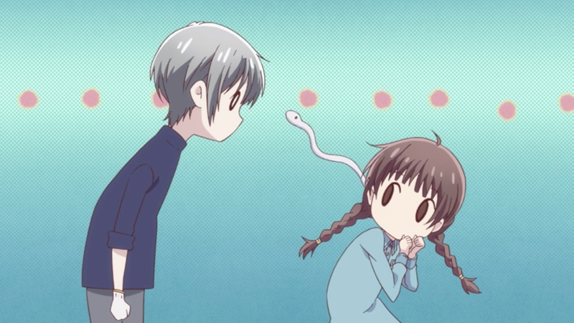

Thanh's Journal Entries
Thankful it's Friday!
April 9th, 2021
Today, I didn't have too much to do today besides going to a meeting for the CSE 3 tutor staff. We talked about
how our labs went for the week and ways to improve interactability with the students. We decided that one way to
interact more with the students and have them work better together was to have students share their screen while
they are in breakout rooms.
After the tutor meeting, I just relaxed for the rest of the day (so thankful that it was Friday!) and watched TV
shows. I was rewatching an anime called Fruits Basket because the third season of this show just came out
and I needed a refresher of who the characters all were. Overall, a very fun and relaxing day!

Family Time and Travel
April 10th, 2021
Today was a more important day because I had a family obligation to attend. The event was from 9am - 1pm.
Afterwards, I spent time with family and we watched old home videos that we had from the 2000s which was really
fun. One video that we watched was of my 4th birthday party! It was fun watching me and my cousins as little kids
(especially because we all had the same haircut when we were younger: thick bangs and shoulder-length hair).
After this event, my cousins and I drove back down to San Diego since I am currently living on-campus. The drive
was 2 hours, which was much longer than the usual 1-hour trip because of traffic along the 5. I got back to UCSD
campus around 6 pm, and then I 'made' myself dinner (more so just boxed mac n' cheese lol). Afterwards, I studied
and took a CSE 101 quiz and relaxed for the rest of the night.
Catching up on Schoolwork
April 11th, 2021
Unfortunately, today I had to catch up on all the schoolwork that I put off during the weekend. :(
My TODO list was (ordered by priority):
- Watch CSE 110 Project Team meeting (I missed it because of my family obligation yesterday)
- Finish CSE 110 Lab
- Go to IEEE Quarterly Projects Kickoff
Another thing that I did today was get the first dose of the COVID vaccine! I was eligible to get it since I'm
a UCSD CSE tutor, so I waited in line at RIMAC for about half an hour. Their process was very efficient, which
was nice especially because there was a lot of people there. My symptoms haven't been too bad so far, the only thing
is that throughout the day, my arm got more sore.
Overall, a pretty boring day but excited to start week 3!